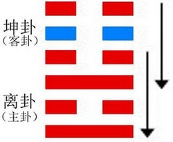
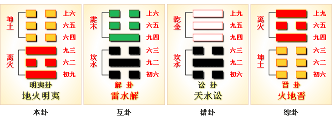
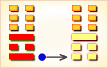
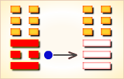
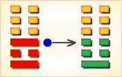
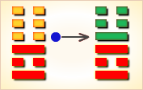
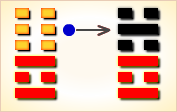
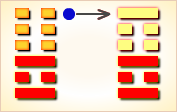

明夷（míng yí）卦展示明夷形势下各种变化的可能性，“明夷”是失意的意思。
明夷卦的代号是5:0。主卦是离卦，卦象是火，阳数是5；客卦是坤卦，卦象是地，阳数是0。
图中，红色表示当位的爻，天蓝色表示不当位的爻，箭头表示有应。
主方应当保持目前状态，积极主动，态度强硬地谋求发展和开拓，逐渐地，情况会向更有利于主方的方面变化。 明夷卦，地火明夷，晦而转明。
明夷卦结构和卦爻辞图中，六条爻有五条是红色，是当位的爻，一条爻是天蓝色，是不当位的爻。不当位的爻只有一条，即第五爻，这是客卦中爻代表客方素质，阴表示客方素质不佳，不可能让主方得到益处，是潜在的对主方不利因素。这条爻属于客卦，只有客方才能改变它，主方不可能改变它，主方不可能为改善自己的处境在这方面作些什么。其它的爻都是当位的爻，都是对主方有利的潜在因素或者真正的有利因素，主方都不需要改变。可以说，主方只好无可奈何地接受现实，耐心等待客方变化，或者主客双方都可能发生的常规变化。
客方的常规变化将是从坤卦变到震卦，这种变化需要经过一个从量变到质变的关键点，阳数从0增加到4，这个过差很难，在短期内发生的可能性很小。 主方的常规变化，将是从离卦变到兑卦，只是一个上升过程的量变，实现的可能性很大，因此，主方应当保持状态，积极主动，态度强硬地谋求发展和开拓，逐渐地，情况会向更有利于主方的方面变化。
明夷卦的卦辞，“利艰贞”，指出了主方应当坚持下去，尽管情况艰苦，还是应当坚持下去。如果删去明夷卦爻辞中判断辞，再略去爻的名称，六条爻辞就是一首完整的关于失意的散文诗。
像是在飞行中失意的鸟，垂下了翅膀；
它整天飞行，三天都没有吃食，主人还有意见。
失意啊，像是伤了左腿，（不能动弹，）
只好指望有匹强壮的马来拯救。
在南方猎狩失意啊，射中一头大兽，却不能够迅速去获取。
进入（失意者）的心腹，获知失意者的心，
（失意）发生在走出门庭（进入社会实践之时）。
（这是像）箕子一样的失意啊。
（失意者感觉空间）既不明亮也不晦暗，
起初（怀着那明亮的希望）登上蓝天，
后来（遇到现实）又坠入于地下。
下面逐条说明卦爻辞。
这个卦是异卦（下离上坤）相叠。
离为明，坤为顺；离为日；坤为地。日没入地，
光明受损，前途不明，环境困难，
宜遵时养晦，坚守正道，外愚内慧，韬光养晦。
“明夷”：利艰贞。
《彖》曰：明入地中，“明夷”。
内文明而外柔顺，以蒙大难，文王以之。
“利艰贞”，晦其明也。内难而能正其志，箕子以之。
《象》曰：明入地中，
“明夷”，君子以莅众，用晦而明。
王弼曰：显明于外，乃所辟也。
初九：明夷于飞，垂其翼。
君子于行，三日不食。有攸往，主人有言。
《象》曰：“君子于行”，义不食也。
“明夷”之主在上六。二与五，皆其用事之地。
而九三势均于其主，力足以正之，
此三者皆有责于“明夷”之世者也。
夫君子有责于斯世，力能救则救之，六二之“用拯”是也；
力能正则正之，九三之“南狩”是也。
既不能救，又不能正，则君子不敢辞其辱以私便其身，
六五之“箕子”是也。
君子居“明夷”之世，有责必有以塞之，
无责必有以全其身而不失其正。
初九、六四，无责于斯世，
故近者则入腹获心“于出门庭”，
而远者则行不及食也。
“明夷”者，自“夷”以全其明也，将飞而举其翼，
必见縻矣，故“垂其翼”，所以示不飞之形也。
方其未去也，“垂其翼”，缓之至也；
及其去也，三日不遑食，亟之至也。
是何也？则惧不免也。
“明夷”之主，既已失其民矣，
我有所适，所适必其敌也。
去主而适敌，主且以我为谋之，故曰“主人有言”。
“主人”，上六也。
六二：明夷，夷于左股，用拯马壮，吉。
《象》曰：六二之吉，顺以则也。
爻言左右，犹言内外也。在我之上，则于我为左矣。
“明夷”之世，“坤”，君也，而将废也。
“离”，臣也，而方壮也。自“离”言之，“坤”之废，左股之伤也。
六二忠顺之至，故往用拯之，爱其忠而忧其不济也。
故戒之曰：徒往不足拯也。马壮而后吉，马所以载伤者也。
九三：明夷，于南狩，得其大首，不可疾贞。
《象》曰：“南狩”之志，乃大得也。
六二所居者顺，而不失人臣之则，故可以拯不明之君。
有功而不见疑，是以吉也。至于九三，其势逼矣。
虽欲拯之而不可得，故“南狩”以正之。
“明夷”始自晦也，“南狩”，发其明之地也。
以阳用阳，戒在于速，故“大首”既获，则“不可疾贞”。
（所居者顺：《苏氏易传》作“所居顺”，误。）
〖卦辞原文〗利艰贞。
〖译文〗利于艰苦坚持下去。
〖解说〗客方消极被动适应于主方的积极主动，
客方的随和态度适应于主方的强硬态度，
这些都是有利于主方的因素，然而，客方素质不佳，
不能给予主方所需要的东西，主方不能指望从客方得到什么，
主方有一段艰难时期，主方应当坚持下去。
坚持下去，情况会逐渐得到改善，“利艰贞”。
〖原文〗不明晦；初登于天，后入于地。
〖译文〗不明不暗，起初登上天空，后又坠入地下。
〖解说〗这是第六爻爻辞，阴，表示客方态度随和。
“明晦”，明暗。客方态度随和，随同主方。
主方在积极主动地探索，客方跟随主方，变化无常。
爻辞只是陈述了主方失意的状态，“初登于天，后入于地”。
〖结构分析〗第六爻是客卦上爻，
其位置是阴位，这条爻是阴爻，
阴爻在阴位，当位，又与三阳有应。
当位，表明客方态度随有可能接受主方制约，
是潜在的对主方有利因素；
有应，表明主方态度强硬，制约客方，便于开拓发展，
这潜在因素成了真正的对主方有利因素。
同时，第六爻是对第五条的补充，第五条是阴，
第六条也是阴，这表示客方素质很差，
主方实际上不能从客方得到什么有益的东西，
所以爻辞中没有判断辞。
〖原文〗箕子之明夷，利贞。
〖译文〗箕子的失意，利于坚持下去。
〖解说〗这是第五爻爻辞，
阴，表示客方素质不佳，比如说，
资金缺乏、地位底下、实力薄弱、教育程度低，等等。
“箕子”是纣的叔父，据考证，商纣王时，
王朝腐败，箕子佯狂而独自一人隐居在箕山，
闲暇时候借乐曲《箕子操》抒发自已郁郁不得志的苦闷心情。
爻辞以箕子作形象比喻，说明主方失意的情况。
这条爻辞有是否在周文王之后有所修改，须要考证，
然而，这里用“箕子”形象地描绘失意者是适当的。
主方不可能立即改变状况，然而，
应当坚持下去，时间长了，情况会自有改变。
〖结构分析〗第五爻是客卦中爻，
其位置是阳位，这条爻是阴爻，阴爻在阳位，
不当位，并且和二阴不有应。
不当位，表明客方素质不佳，
有可能向主方索取收益，是潜在的对主方不利因素；
不有应，表明主方素质也不佳，
主方不能够给予客方有益的东西，
这潜在因素没有成为真正的对主方不利因素，
所以爻辞说“利贞”。
〖原文〗入于左腹，获明夷之心，于出门庭。
〖译文〗入于（失意者的）心腹，
获得失意者的心，失意发生在走出家门的时候。
〖解说〗这是第四爻爻辞，
阴，表示客方消极被动，
比如说，防守、退却、不想冒险、
不想探索或开辟新的发展领域、只求保持现状，等等。
“门庭”，家门，门户。
客方消极被动，方便了积极主动的主方，主方能够走出门庭，
但是，客方没有什么可以给主方的，主方走出门庭就失意了，
这是失意的真正原因，是“明夷之心”。
〖结构分析〗第四爻是客卦下爻，
其位置是阴位，这条爻是阴爻，
阴爻在阴位，当位，又与一阳有应。
当位，表明客方消极被动是主方发展的好机会，
是潜在的对主方有利因素；
有应，表明主方积极主动，正好可以利用这样的好机会，
这潜在因素成了真正的对主方有利因素。
然而，由于客方素质极差，
主方从客方得不到什么，所以爻辞没有加判断辞。
〖原文〗明夷于南狩，得其大首；不可疾，贞。
〖译文〗在南方打猎失意，得到了大的野兽；
不能快速取得，坚持下去。
〖解说〗这是第三爻爻辞，
阳，表示主方态度强硬。
“狩”（shòu），打猎，古代指冬天打猎：狩猎。
“疾”（jí），快，迅速：疾步。
主方持强硬态度，而客方态度随和，
然而，主方不能从客方得到什么，主方感到失意。
“得其大首”中，“大首”是指受到伤害的大的野兽，
联系上下文，爻辞解释了失意的原因，大的野兽打着了。
但是，主方得不到。“贞”指主方强硬态度应当坚持下去。
〖结构分析〗第三爻是主卦上爻，
其位置是阳位，这条爻是阳爻，
阳爻在阳位，当位，又与六阴有应。
当位，表明主方有可能制约客方，
让客方按自己的意图行事，是潜在的对主方有利因素；
有应，表明客方态度随和，接受主方的强硬态度，
这潜在因素成了真正的对主方有利因素。
然而，由于客方素质不佳，主方并不能从客方得到收益，
所以爻辞说“贞“，坚持强硬态度。
〖原文〗明夷，夷于左股，用拯马壮，吉。
〖译文〗失意，左大腿受伤，
希望有强壮的马来救助。吉利。
〖解说〗这是第二爻爻辞，
阴，表示主方素质不佳，比如说，
资金缺乏、地位底下、实力薄弱、教育程度低，等等。
拯（zhěng），援救，救助：拯救。
主方素质不佳，需要客方帮助，
然而，客方素质也不佳，
主方得不到所需帮助，“明夷，夷于左股”。
如果有强有力的支持，情况就对主方吉利。
这里的马，指客方，希望客方能够帮助主方。
如果客方能够帮助主方，情况就吉利。
〖结构分析〗第二爻是主卦中爻，
其位置是阴位，这条爻是阴爻，阴爻在阴位，
当位，然而与五阴不有应。
当位，表明主方素质不佳，
有向外谋求发展的要求，是潜在的对主方有利因素；
不有应，表明客方素质也不佳，主方不能从客方得到帮助，
这潜在因素没有成为真正的对主方有利因素。
尽管这有利因素是潜在的，主方还是应当坚持下去，
一旦客方情况变化，补益主方的机会出现，
主方就能够得益，所以爻辞说“吉”。
〖原文〗明夷于飞，垂其翼；
君子于行，三日不食；有攸往，主人有言。
〖译文〗在飞行中失意，垂下了翅膀；
君子在行走，三天没有吃东西；
往前有所进展，主人有言语。
〖解说〗这是第一爻爻辞，
阳，表示主方积极主动地谋取和扩大自己的利益，
比如说，创新、创业、投资、进攻、求职、示爱，等等。
这里，飞行中的鸟和君子都是指主方，主人指客方。
主方在积极主动行动过程中，由于得不到有力支持，
感到失意，像飞行中的鸟，垂下了翅膀；
像行走的人，三天没有吃东西。
主方的行动有些效果，“有攸往”。
不过，客方并没有完全支持主方行为，
对于主方的行动有意见，“主人有言”。
〖结构分析〗第一爻是主卦下爻，
其位置是阳位，这条爻是阳爻，
阳爻在阳位，当位，又与四阴有应。
当位，表明主方积极主动有可能从客方获得利益，
是潜在的对主方有利因素；
有应，表明客方消极被动，方便主方的积极主动，
这潜在因素成了真正的对主方有利因素，所以爻辞说“有攸往”。
《象》曰：时乖运拙走不着，急忙过河拆了桥。恩人无义反为怨，凡事无功枉受劳。
这个卦是异卦，日没入地，光明受损，前途不明，环境困难，宜遵时养晦，坚守正道，外愚内慧，韬光养晦。
（下离上坤）明夷：利艰贞。
〔释诠〕明夷卦：得道之人，身遭乱世，
宜于退隐静修，以保持人格的完整。
〔把握〕文明发展，是整个人类的事业。
民富国强，需要全社会的共同努力。
先知先觉者，不可因一己之聪明，就意志执行“善良”的理念。
那样，只能两败俱伤。
只有从文化民众开始，启智，发蒙，才可以规避小人之害。
《彖》曰：明入地中，“明夷”；
内文明而外柔顺，以蒙大难，文王以之。
“利艰贞”，晦其明也；内难而能正其志，箕子以之。
〔释诠〕《彖传》说：
道被阴阳构形的器物包裹隐饰着，这就是遮蔽。
把握住事物内在的、形而上的本质、法则、规律的不可违抗性，
也就知晓了其外部的强硬只是一种现象，是由其内在因素决定的。
这一道理，是周文王事殷蒙难被囚羑里时，通过推演六十四卦之后得到的。
“逢乱世退身自保”，是因为邪魔歪道气势正盛，
正义的力量太弱小，还不适合于进攻策略。
但是，我们永远不要忘记，退隐自守不是妥协投降，
而是采用佯饰的一种手段，以达存续传承文明之道的“载体”之身。
这时心灵无论有多少苦难，都不应放弃坚持就是胜利的道理。
殷纣王囚其叔父，箕子佯狂为奴，就是一个最好的非暴力抵抗的典范。
〔把握〕必须清楚，
决不能望文生义地以为“明夷”，
就是“光明殒伤”或“光明没了”。
而是道本就在器物之型的遮蔽之下。
这里说的光明，其实就是“文明”。
是指事物的本质，或其运动、变化的规律。
在其身，为文、为光；在我思，为明。
所以，所谓文明，其实就是合道的同义词。
《象》曰：明入地中，“明夷”：君子以莅众，用晦而明。
〔释诠〕《大象传》中说：
道在阴阳构形之器物的生成、发展和变化过程中。
道的必然性就是潜藏在事物之后的。
公务人员揭示并运用这潜藏隐蔽的道治理国家，社会才能走向道德文明。
〔把握〕此“晦”是对道的直接揭示，如同《老子》中的“无”。
此处之明，则是针对于人类社会的思想、行为了。
千万不要将“晦”与“文明”摆在一起做矛盾观。
初九，明夷于飞，垂其翼；
君子之行，三日不食。有攸往，主人有言。
〔释诠〕初爻：以飞鸟做比喻，
道，就是鸟收拢翅膀后滑翔的行迹。
用三天不吃饭打比方，说明公务行为一离开道，
就对一切现象都无能为力，甚至连自身都控制不了了。
这里存在一个阴阳突变关系，
既有型之物与形上之道的关系和认识属性，
也有阴阳相应变化的轨迹就是道的本质。
问题在于，道只能在思想上用“在”来把握，
而不能用“真”来触摸、听闻或以味觉、嗅觉来感受得到的。
《象》曰：“君子于行”，义不食也。
〔释诠〕《小象传》说：
“公务行为悖道而执”，志士仁人就应该以食禄为耻了。
〔把握〕“主人有言”，《易》之又一绝妙好辞。
只能用语言来陈述，却无法在现象中“抓住”。
此为道之魂、实质和本质。哲学正因此才“玄”起来的。
这不是“唯心”，而是试图指出道的潜藏性和自发的主导作用。
六二，明夷，夷于左腹，用拯马壮吉。
〔释诠〕二爻：心灵被遮蔽，
源于道的形而上之所在，消弥在了有型的器物之中。
如果人们能够理解事物生成、发展、变化的自发性，
就能够勉强体会道的能动作用了。
《象》曰：六二之吉，顺而则也。
〔释诠〕《小象传》说：
懂得了事物的自然规律，自在法则，就通晓了文明之道。
人们就能因此而构造和谐世界了。
〔把握〕“用拯马壮”：哲学范畴下的形象描述。
用，能动性。拯，济，互济。马，四象之四“马”。
既纯粹一对阴阳之形构。壮，生成、发展、变化的逻辑过程。
左腹，逻辑思想上，左是向善的乌托邦；心灵意识中的“防火墙”。
或者：形而上，左腹；心灵意识，中腹；身躯精气，右腹。
九三，明夷于南狩，得其大首；不可疾，贞。
〔释诠〕三爻：
人像火一样，有向上的能动性，因此而成为万物的灵长。
但是，人类也决不能因科技的超越能力，而忘记整体生成的逻辑，
去意志地或随心所欲地称王称霸，毁灭生灵。那样，只能共同被埋葬。
《象》曰：南狩之志，乃大得也。
〔释诠〕《小象传》说：
昂扬向上的动力，就是大道的作用显现。
〔把握〕“大首”，“大得”在人。
“大道”在于自然，“大德”在于人向上的精神品质。
六四：入于左腹，获明夷之心，于出门庭。
《象》曰：“入于左腹”，获心意也。
近不明之君，而位非用事之地，虽以逊免可也。
是故“入其左腹，获其心意”，而君子莫之咎者，以去其门庭之速也。
君子之居此，惧不免尔。既免，未有不去者；
既免而不去，怀其门庭，将以有求，则吾罪大矣。
六五：箕子之明夷，利贞。
《象》曰：箕子之贞，明不可息也。
六五之于上六，正之则势不敌，
救之则力不能，去之则义不可，此最难处者也。
如箕子而后可，箕子之处于此，身可辱也，而“明不可息”者也。
上六：不明晦，初登于天，後入于地。
《象》曰：“初登于天”，照四国也；“後入于地”，失则也。
六爻皆晦也。而所以晦者不同：自五以下，明而晦者也；
若上六，不明而晦者也。故曰“不明晦”，言其实晦非有托也。
明而晦者，始晦而终明；不明而晦者，强明而实晦，此其辨也。
经文：
明夷：利艰贞。
初九：明夷于飞，垂其翼；
君子于行，三日不食。有攸往，主人有言。
六二：明夷，夷于左股，用拯马壮，吉。
九三：明夷于南狩，得其大首，不可疾贞。
六四：入于左腹，获明夷之心，于出门庭。
六五：箕子之明夷，利贞。
上六：不明晦，初登于天，后入于地。
注释：
① 明夷：卦名。夷，通痍，为伤。
离为日为明。明夷即光明损伤。此指日蚀。
② 明夷于飞，垂其翼：明夷鸟飞时，垂下左翼。
由“明夷于飞”与“君了于行”对文看，“明夷”显然是一种鸟。
古代认为日中有三足鸟，马王堆帛画中就有类似的日上飞鸟。
此飞鸟是否与“明夷于飞”有关？
由经文中出现“飞”、“翼”字眼考，“明夷”指一种飞鸟无疑。
“飞”帛《易》作“蜚”，又，帛《易》中有“左” 字，为“垂其左翼” 。
由六二爻“夷于左股”六四爻“入于左腹”考之，当以帛《易》为是。
③ 君子于行，三日不食：君子外行，三日吃不到饭。
④ 主人有言：遭主人责备。言，即责备。
⑤ 明夷：夷于左股，用拯马壮：日食时伤了左腿，要用强壮的马拯救。
夷，伤，又作“睇”“$”即旁视之状。股，腿，亦有解“股”为般，指旋者。
拯，拯救。帛《易》作“撜”另有古本作“抍”。“拯”、“撜”、“ 抍”三字古皆通。
⑥ 明夷于南狩，得其大首，不可疾贞：日食时，到正南方放火烧草狩猎。
南面为“离”位，放火烧草狩猎于离位——此恐当时日食时一种驱灾的仪式。
结果得到一匹踏雪马。不可急于训正使用。于，往。狩，放火烧草而猎。
首，古人称四蹄皆白的马曰“首”，俗称“踏雪马”。疾，急。
⑦ 入于左腹，获明夷之心，于出门庭：
此爻古人多解，估计也是日食时人们驱灾的一种仪式，
认为明夷神鸟进入左腹，这样在左腹处获明夷神鸟的心，
又象征性地将此心送至门庭之外。
⑧ 箕子之明夷：箕子在发生日蚀时。箕子，商纣贤臣，一说“箕”作“荄”。
⑨ 不明晦，初登于天，后入于地：
（发生日食时）天空变的晦暗不明，
开始日升上天，后来又进入地中。
晦，不明。登，升。
今译：
明夷：宜于艰难中守正。
初九：明夷神鸟飞时垂下了左翼。
君子路上行时，三日吃不到饭，
（虽）有所往，但受到主人责备。
六二：日食伤了左腿，用强壮的马才能救之而有吉。
九三：日食时到南郊放火烧草狩猎，
得到一匹踏雪马，不可急于训正（使用）。
六四：在左腹获明夷（神鸟）之心。并送出门庭。
六五：箕子在发生日蚀时，宜于守正。
上六：（日食时）天空晦暗不明，开始日升于天，后入于地中。
明夷①：利根②贞。
【白话】筮得明夷卦，利于初筮。
【注释】
① 明夷：卦名，鸟名。
② 根：始也，初也。
【讲解】明夷卦卦象，
下卦象征太阳，上卦象征大地，构成明入地中之象。
比喻光明受到损害。《彖传》说：“明入地中，明夷。
内文明而外柔顺，以蒙大难，文王以之。利艰贞，晦其明也。
内难而能正其志，箕子以之。”
《象传》说：“明入地中，明夷。君子以莅众，用晦而明。”
初九：明夷于蜚①，垂其左翼，
君子于行，三日不食，有攸往，主人有言②。
【白话】筮得明夷卦，占得初九爻，
明夷鸟在空中飞翔，垂下了左边的翅膀，
一位有道德修养的人同他的主人在旅途中，
已经三天没有吃东西了，但他的主人却有吃的。
【注释】
① 蜚：通“飞”。
② 有言：有之，有吃的东西。
【讲解】王弼说：
“明夷之主，在于上六，上六为至暗者也。
初处卦之始，最远于难也。
远难过甚，明夷远遁，绝迹匿形，不由轨路，故曰‘明夷于飞’。
怀惧而行，行不敢显，故曰‘垂其翼’也。
尚义而行，故曰‘君子于行’也。
志急于行，饥不遑食，故曰‘三日不食’也。
殊类过甚，以斯适人，人必疑之，故曰‘有攸往，主人有言’。”
六二：明夷，夷于①左股，用撜马床②，吉。
【白话】筮得明夷卦，占得六二爻，鸣鴺鸟被射伤了左股，
是猎人骑着健壮的马把它射伤的，吉善美好。
【注释】
① 夷于：伤于。夷：伤。
② 撜：上举。马床：马壮，壮马。
【讲解】六二爻阴柔而处于下卦的中位，
虽然不能飞离而中箭伤，但终归吉善美好。
《象传》说：“六二之吉，顺以则也。”
王弼说：“夷于左股，示行不能壮也。
以柔居中，用夷其明，进不殊类，退不近难，不见疑惮，顺以则也。
故可用拯马而壮吉也。不垂其翼然后乃免也。顺之以则，故不见疑。”
九三：明夷，夷于南守①，得其大首，不可疾贞。
【白话】筮得明夷卦，占得九三爻，
鸣鴺鸟被射伤在南守这个地方，
猎人获得了其中最大的一只鸣鴺鸟，不必迅速贞问。
【注释】① 南守：通行本作“南狩”，谓狩猎于南方。
帛书作“南守”，释为地名。
【讲解】九三爻阳刚之爻处于下卦罗卦的最上方，
有阳刚上行制止阴柔、以阳光克制阴暗的卦象，
其意在六五之尊位，尊位面南，又因六五爻处位不当，所以说南守。
六四：明夷，夷于左腹，获明夷之心，于出门廷①。
【白话】筮得明夷卦，占得六四爻，
鸣鴺鸟被射伤了左腹，获得鸣鴺鸟的心脏，犹如走出门廷一样容易。
【注释】① 于出门廷：如出门廷。于：如。
【讲解】六四爻以阴柔之爻居阴柔之位，而进入上体川卦坤顺之地。
《象传》说：“入于左腹，获心意也。”
王弼说：“左者，取其顺也。入于左腹，得其心意，故虽近不危。
虽时辟难，门庭而已，能不逆忤也。”
孔颖达说：“凡右为用事也，从其左不从其右，是卑顺不逆也。
腹者，事情之地，六四体柔处坤，与上六相近，
是能执卑顺入于左腹，获明夷之心意也。”
六五：箕子之①明夷，利贞。
【白话】筮得明夷卦，占得六五爻，
箕子用鸣鴺鸟祭祀，利于贞问。
【注释】① 之：用。
【讲解】六五以阴柔之爻处于尊位，位尊应该光明，
而阴柔则不光明，是隐晦其明之象，故以箕子作为例子。
马融说：“箕子，纣之诸父，明于天道《洪范》之‘九畴’，
德可以王，故以当五，知纣之恶无可奈何，同姓恩深，
不忍弃去，被发佯狂，以明为暗，故曰‘箕子之明夷’。
卒以全身，为武王师，名传无穷，故曰‘利贞’矣。”
尚六：不明海①，初登于天，后入于地。
【白话】筮得明夷卦，占得尚六爻，
鸣鴺鸟不叫的时候便隐藏起来了，
开始时飞翔于天空，嗣后又落在地面上。
【注释】① 不明：不鸣。海：读为“晦”，形近易讹。
【讲解】尚六阴柔之爻处于阴柔之位，
以阴柔之爻居阴柔之位处明夷卦的终极，
所处最为阴暗，所以爻辞有“不明海（晦）”的说法。
明入地中，明夷。
内文明而外柔顺，
以蒙大难，文王以之。
利艰贞，晦其明也。
内难而能正其志，箕子以之。
白话：《彖传》说：
光明如同火种潜伏在大地之下，
象征了光明的隐退。
圣人内守文明的美德，外显柔顺的情态，
这样可以承受各种大灾大难。
史上周文王被囚禁时以此度过危难。
“艰难时期能够洁身自好一定能坚守正道。”
说明有必要隐藏才能的锋芒。
在身陷萧蔷之难秉正不屈更加坚定志向，
君子就应该效法这种精神。
明入地中，明夷；
君子以莅众，用晦而明。
君子于行，义不食也。
六二之吉，顺以则也。
南狩之志，乃大得也。
入于左腹，获心意也。
箕子之贞，明不可息也。
初登于天，照四国也。
后入于地，失则也。
【原文】
（离下坤上）明夷①，利艰贞。
初九：“明夷于飞②，垂其翼。
君子于行，三日不食。”有攸往， 主人有言③。
六二：明夷④，夷于左股⑤，用拯马壮⑥。吉。
九三：明夷于南狩⑦，得其大首⑧。不可疾贞⑨。
六四：入于左腹⑩，获得夷之心⑪，于出门庭。
六五：箕子之明夷⑫，利贞。
上六：不明，晦。初登于天，后入于地。
【注释】
① 明夷是本卦的标题。
明夷在卦中有三种意思：
一指鸣，即叫着的鹈鹕；
二指鸣响的弓；三指太阳落下。
全卦内容讲出行狩猎和隐退守洁，用多见词作标题。
② 明夷于飞：这里引用一首民歌作占，
叫做谣占，在这里用来说明行旅之难。
明夷：用作‘鸣夷’，意思是叫着的鹈鹕。
鹈鹕是一种水鸟，俗称淘河。
③ 言：指责，责难。
④ 明：这里指太阳。夷：来。明夷就是太阳下山。
⑤ 夷：用作“痍”，意思是受伤。
⑥ 用：因为。拯： 得救。
用拯马壮：意思是说因为壮善跑而得救。
⑦ 明夷：这里指鸣弓，意思是说拉弓发射。
南狩：南方的猎区。
⑧ 大首：大头，指大头的猛兽。
⑨ 可：利。
⑩ 腹：古代半地下式房屋的复室。
左腹就是左室，这里指隐居之处。
⑪ 明夷：太阳隐去，这里的意思是说隐退。
⑫ 箕子：殷纣王的哥哥。明夷：这里指隐退。
【译文】
明夷卦：有利于占问艰难的事。
初九：”鹈鹕在飞行，垂敛着羽翼。
君子在旅途，多日无食粮。” 前去的地方，受到主人责难。
六二：太阳下山的时候，左腿受了伤，因马壮得救。吉利。
九三：在南边的猎区拉弓射箭，猎获了大猛兽。不利于占问疾病。
六四：进入隐居之处，产生了归隐的念头，一出门就想返回。
六五：殷纣王的哥哥箕子到东方邻国去避难，吉利的占问。
上六：太阳下山，天黑了。太阳初升是天明，后来下山是天黑。
【读解】
借日出日落、天明天黑，来
表达君子出行时的内心体验，
尤其突出了出行途中的艰难境遇：
饥肠辘辘，房东的刁难，
身体的伤病，油然而生归隐之心。
当然，也有顺利之时：狩猎时所获甚丰。
但全卦的语调却在突出行旅的艰难和归隐之思。
在这种行路难的倾诉之中，我们可以清晰地分辨出一种疲惫感无奈感。
人生路漫漫，日出复又入，何时有尽头，何处是归宿？
这种感慨之中，显然包含有对人生意义的形而上的追求和悲观的色彩，
包含有对个人存在价值的内存关注。
人生固然是一场战斗，为了功名利禄、家国妻儿；
但得到之后又怎样，自己的位置在哪里，
为什么总得去获取，为什么不停下来抚慰创伤、静心思虑？
太阳再辉煌也有消失的时候，事业再辉煌同样有难以为继的时候，
人生再顺畅照样免不了灾祸。这一切真是剪不断理还乱的思绪。
不可能不去想，却又永远不出答案。
是呵，不如归去，隐没到与世隔绝的世外桃源，
不看不想无欲无求无牵无挂，岂不是大好大了的境界！
古往今来，有几人真正识透了个中妙谛？
归隐，大概也该算是人生“永恒主题”之一吧。

明夷卦坤上离下，为坎宫游魂卦。明夷即明德被伤，象征君子受厄，此时百事宜息，静观待变。
日入地中，光明被伤；万事阻滞，等待时运。
得此卦者，时运不佳，事事劳苦，宜坚守正道，忍耐自重，等待时机。
这个卦是异卦（下离上坤）相叠。
离为明，坤为顺；离为日；坤为地。
日没入地，光明受损，前途不明，环境困难，
宜遵时养晦，坚守正道，外愚内慧，韬光养晦。
大象：太阳掩没在坤地之下，大地黑暗，有失明之象。
运势：百事阻滞，小人加害，遇事多迷惑，宜守，静待时机而动。
明夷：表示火入坑中，阳气被阴气所伤害，
被小人所重伤，主大凶象。诸事不宜，运背之时。
解释：浑沌不明。
特性：朋友多，心慈，重友谊，
喜追求高层次的境界，理智和感情常矛盾。
有时会牺牲一切，去完成自己的理想。
运势：逆势下降，时运未济，万事劳苦，逢小人加害，光明受到掩蔽而失光明，所以多艰难之运也。有万事阻滞，遇事迷惑、受灾。故宜守贞固之道，忍耐自重，等待时机 。
初九。明夷于飞，垂其翼。君子于行，三日不食。有攸往，主人有言。
《象》曰：君子于行，义不食也。
初九：“鹈鹕在飞翔，停栖在沼畔。君子离家走，三日无食粮。”筮遇此爻，有所往，则必遭主人谴责。
《象辞》说：君子在旅途中，依礼义不能蒙羞受食。
平：得此爻者，或有手足之伤，善者有进财纳福之喜。做官的有飞黄腾达之象，但谨防有失。

初九爻动变得第15卦：地山谦。
这个卦是异卦（下艮上坤）相叠，
艮为山，坤为地。
地面有山，地卑（低）而山高，
是为内高外低，比喻功高不自居，名高不自誉，位高不自傲。这就是谦。
六二。明夷，夷于左股，用拯马壮，吉。
《象》曰：六二之吉，顺以则也。
六二：鹈鹕，鹈鹕，伤于左股，君子负伤，因马获救。吉利。
《象辞》说：六二爻辞所讲的吉利，是因为六二阴爻处于九三阳爻之下，正像马顺从主人善体人意。
吉：得此爻者，常人或有难，但会得贵人之助。做官的会有实权，能当大任。读书人会取得好成绩。

六二爻动变得第11卦：地天泰。
这个卦是异卦（下乾上坤）相叠，
乾为天，为阳；坤为地，为阴。
阴阳交感，上下互通，天地相交，万物纷纭。
反之则凶，万事万物，皆对立，转化，盛极必衰，衰而转盛，故应时而变者泰（通）。
九三。明夷于南狩，得其大首，不可疾，贞。
《象》曰：南狩之志，乃大得也。
九三：在南方的猎区，拉弓射箭，获得一些大野兽。筮遇此爻，占问疾病则不利。
《象辞》说：决心在南方狩猎，大称其意。
平：得此爻者，有修屋宇造作之兆。不良者，左股或有伤，多忧愁分离之患。

九三爻动变得第24卦：地雷复。
这个卦是异卦（下震上坤）相叠。
震为雷、为动；坤为地、为顺，动则顺，顺其自然。
动在顺中，内阳外阴，循序运动，进退自如，利于前进。
六四。入于左腹，获明夷之心，出于门庭。
《象》曰：入于左腹，获心意也。
六四：回到深隐之处吧！走出居室，进入社会，就感到环境的险恶，退隐的念头油然而生。
《象辞》说：回到深隐之处，就满足了退隐的心意。
平：得此爻者，出外营谋者会顺利，妇人有孕者生男，不良者或生心腹之疾。做官的闲职者会复职，在职者，多出外任职，韬光养晦者必出身成名。

六四爻动变得第55卦：雷火丰。
这个卦是异卦（下离上震）相叠，
电闪雷鸣，成就巨大，喻达到顶峰，如日中天。
告戒：务必注意事物向相反方面发展，盛衰无常，不可不警惕。
六五。箕子之明夷，利贞。
《象》曰：箕子之贞，明不可息也。
六五：殷亡后，箕子逃到东方邻国避难，卜问得吉兆。
《象辞》说：箕子退隐守正，他的光辉形像千古不灭。
平：得此爻者，难逢知己，或有家难之祸。做官的须修德养性可保无忧。

六五爻动变得第63卦：水火既济。
这个卦是异卦（下离上坎）相叠。
坎为水，离为火。
水火相交，水在火上，水势压倒火势，救火大功告成。
既，已经；济，成也。既济就是事情已经成功，但终将发生变故。
上六。不明晦。初登于天，后入于地。
《象》曰：初登于天，照四国也。后入于地，失则也。
上六：阳光消失了，天黑了。太阳初升，君子进仕之象；太阳隐没，君子退隐之象。
《象辞》说：太阳初升，君子进仕，光照四方。太阳隐没，君子引退，国无楷模。
凶：得此爻者，先喜后忧，老者或不寿。做官的防止遭人流言，或被贬。

上六爻动变得第22卦：山火贲。
这个卦是异卦（下离上艮）相叠。
离为火为明；艮为山为止。
文明而有节制。
贲卦论述文与质的关系，以质为主，以文调节。贲，文饰、修饰。